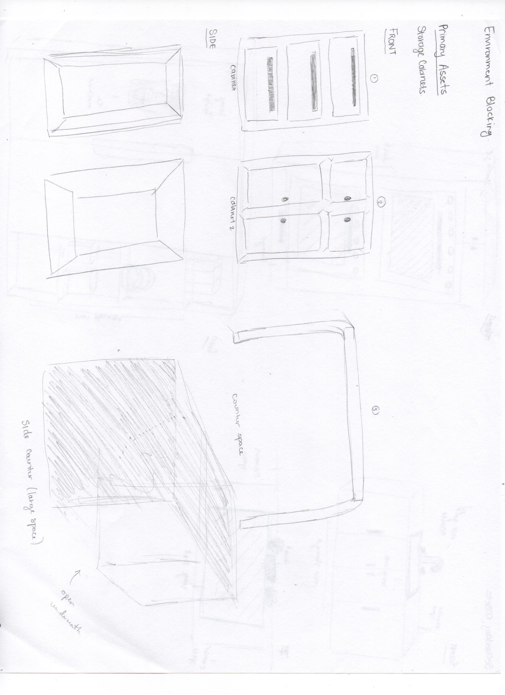
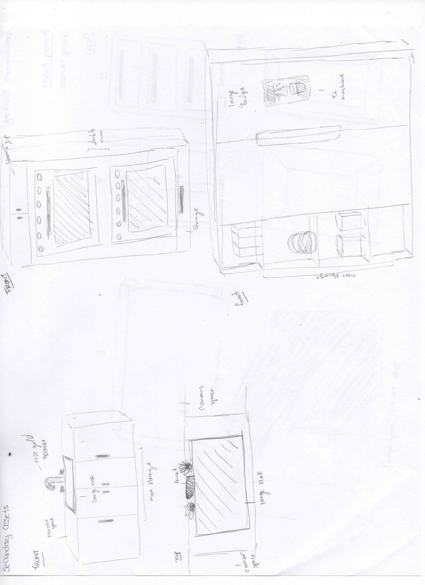
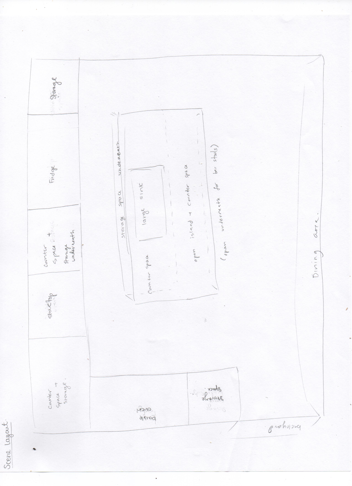
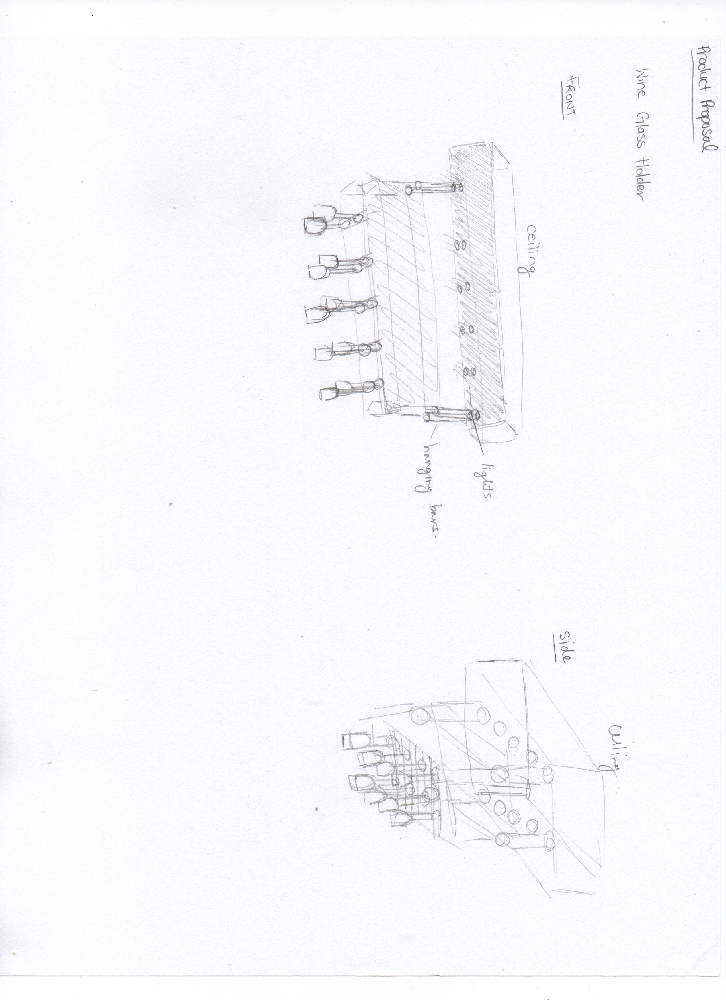

The purpose of this project was to create multiple 3D assets and create one large 3D rendered scene. I chose to make a kitchen with different elements and pieces to the scene. These are some product views and orthographic views of the entire kitchen itself and some assets that are in the kitchen.
   September 2020 - December 2020
This was a step by step process throughout the four months. Research went into the different assets throughout the scene. The asset I worked on the most was the hanging wine glass holder from the ceiling. That asset took time to create the glass itself, position against the ceiling and having the racks placed so that it would show the wine glasses hanging and not floating. For the finalized renders, an Ambient Occlusion, Wireframed, and fully rendered images were created for each angle of the kitchen.
Autodesk Maya
Adobe Photoshop
Adobe Illustrator
The final product was a rendered kitchen scene with multiple 3D objects. Different angles of th ekitchen were produced and there was lots of lighting angles as well.